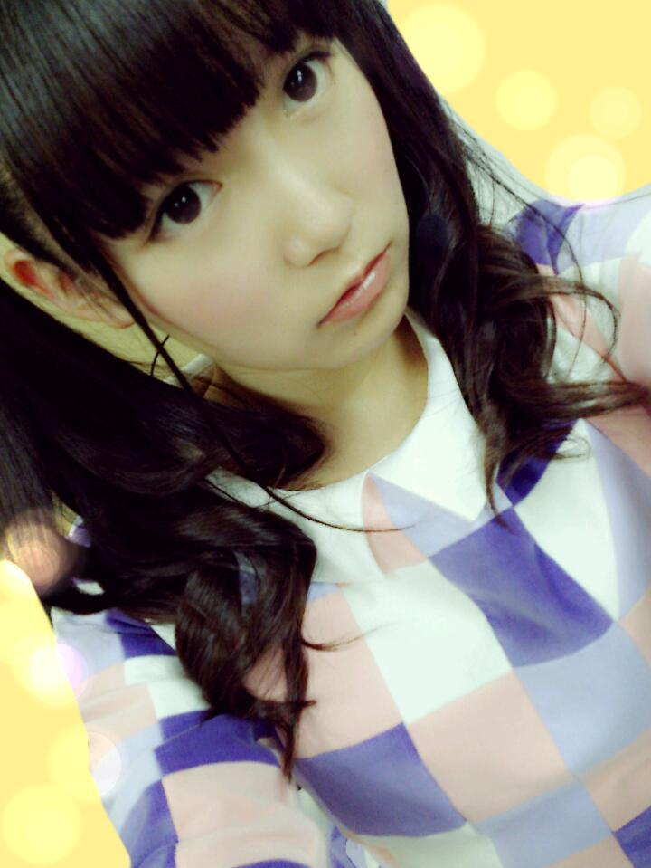
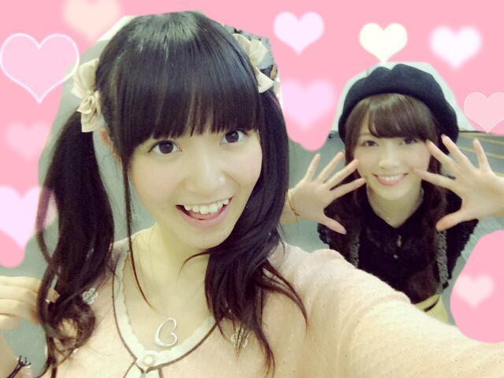
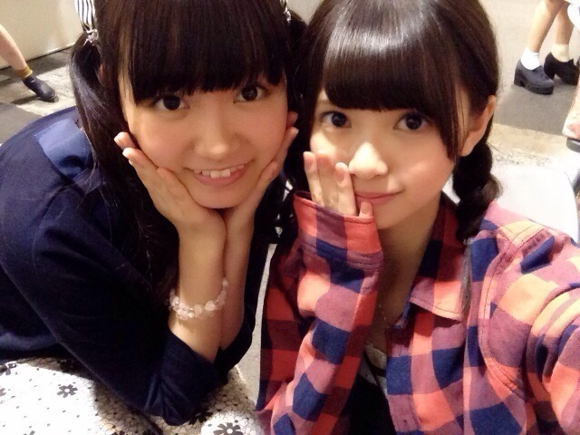
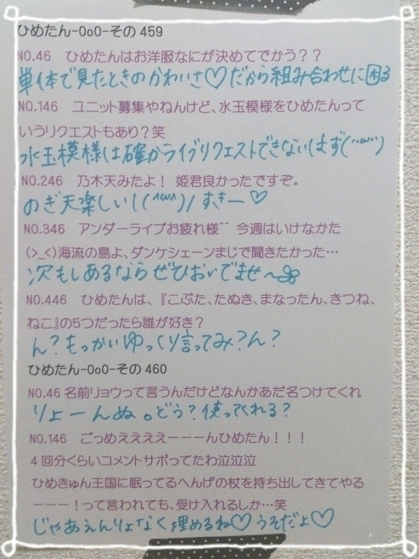

| 2014/10 11 Sat | ひめたん-OoO-その487 |

あいかわらず加工が雑\( ˆoˆ )/
「あの日 僕は咄嗟に嘘をついた」歌衣装
前回は10thについて
たくさんの感想いただきました♡
自分の映像作品を観るのは
あんま好きじゃないんだけど
ちょっとチェックしてみよっかなって
コメント読んでて思った(っ´ω`c)てへ
みなさんは、
今回の6曲の中で何が一番好きー？
あ、そうそう
オリコンデイリーチャート1位を
獲得することができました(；ω；)
本当にみなさんのおかげです
いつもありがとうございます♡
みなさんの期待に応えられるよう
ひめたんももっともっと
頑張らねば～
写り込みまいやん♡♡ばー

MARQUEE発売になりました(^o^)＊
川後Pがメンバーを
プロデュースする企画なんだけど
第一弾 ひめたん！
陽菜ちゃんからのご指名です♪♪
普段とは違う雰囲気で撮っていただいたの
いやーこんなの自分じゃ思いつかない
さすがプロデューサー！！
インタビューも
いつものふたりらしくて
読んでて楽しいのが伝わってくるはず(笑)
ブラックひめたん∧( 'Θ' )∧

のぎ天はもう観てくれた？
みなさんからの投票が
一番多かったチームには
ご褒美があるんだって！！
チーム秋葉原よろしくね♡♡
食レポ頑張ったし
ぱんださんも着たんだよ(；ω；)にゃー
今日のアンダーライブは
ちーちゃん、いこたん、玲奈さん、
田中将大投手が来てくださいました♡
来てくれたファンのみなさんも
本当にありがとう∩(・ω・)∩
さゆがライブ復帰したよ～
あとは れなちさんも揃って
全員で舞台に立ちたいです！
ライブって一回一回
ちゃんと収穫があるんだなあ
自分の今日のテンションと
みなさんのテンションと
全部が同じ日なんて絶対にないから
そーゆーのを感じながらやるの
とっても楽しい！ライブはなまもの！

あしゅかりんらーぶぅ(但しビジネス)♡

 藤井アナとは
藤井アナとは
どんなことを話したのかな？
娘さんが可愛いんだって話を
ずっと聞いてました(＊＾ω＾＊)
パンダは
「いつもお世話になっております～」
と鳴きますよ！
へ～すごーい(白目)
御堂筋くんのモノマネ頼んだら
できますか？？www
( ◉◉ )ｷﾓｯｷﾓｯｷﾓｰ
ひめたんうどんとそばどっちが好き？
そば派かな～
うどんはたくさん噛まなきゃだけど
ひめたん噛むの苦手なんよ～
ひめ♡って呼ばれるのと
ひめたん♡って呼ばれるのだったら
どっちがいいー？？
どっちも嬉しいからみんな
呼びたいように呼んでね♡♡
「ひめたん」でアイドルモード
「ひめ」でお姫様モード発動！
ひめたんの日記の
コメント欄下２ケタに46を踏んだ方へ
手書きでコメ返するコーナー
＼ ひめたん46 ／

いつもたくさんのコメント
ありがとうございます
寒くなってきたね～
台風も近づいてるみたいだし
アンダーライブとぶつからないといいな
昨日の休演日は収録してたよ
はやく告知したいな～:(´◦ω◦｀):♡
アニメも録画溜まってるけど
ライブ終わるまでは追い付けないかも。
今日ゆったんとKTKと3人で楽屋で
アニメ話で盛り上がったの
楽しかった(＊＾ω＾＊)
スクフェスはイベントやってるよね
かよちん狙えるかな～
もちろん頑張るけど届くかな～
ぱんださんの鳴き声は
いろいろお返事いただいたよ
いっこ「あ～これかも！」って
思ったのがあったんだけど
なんだったっけ忘れちゃった(゜ω゜)
ライブ終わったら映画行きたいよ
らり姉さん映画連れてって～～♡
(＊´・ω・＊)
コメント(808)
2014/10/11 23:48